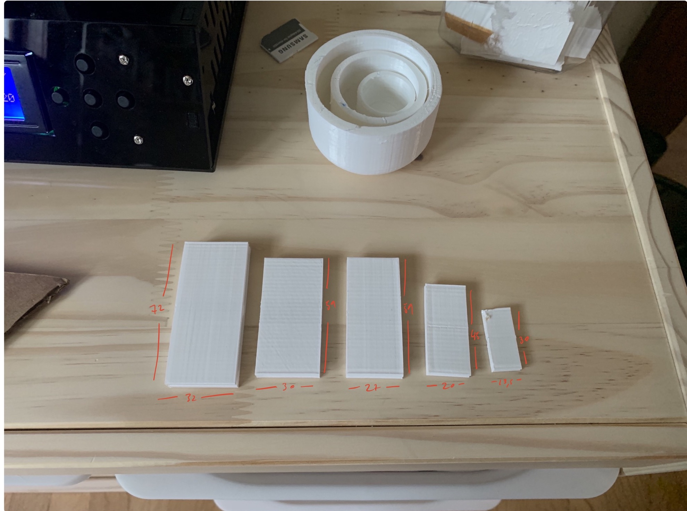
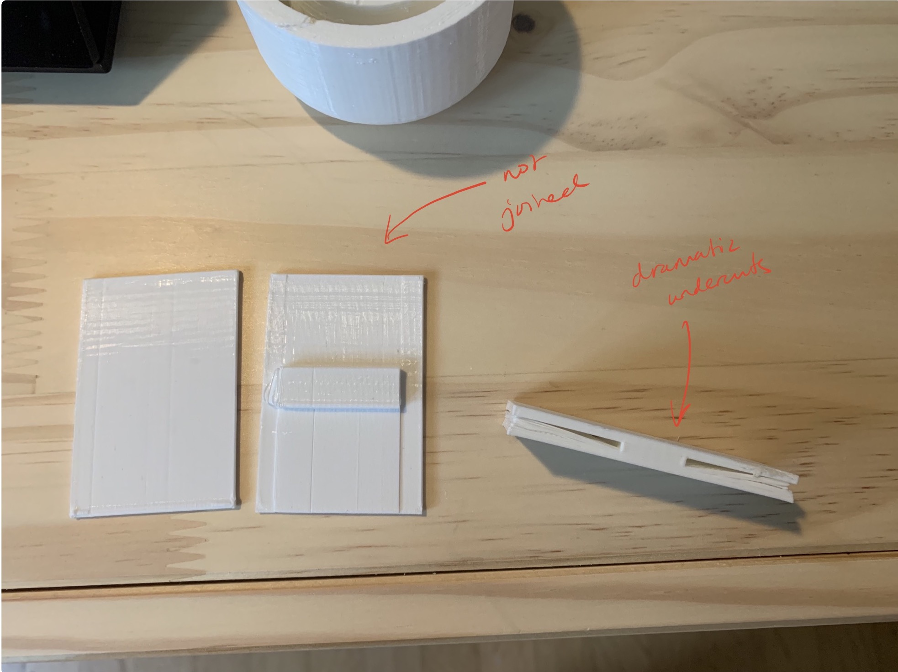
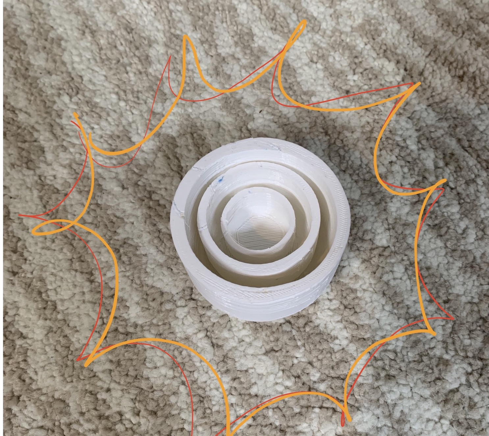

Gabrielle's Assignment 4
Part I: Meshy hands

For this assignment, I fused two meshes of hands to produce a sculpture of facing hands.
STL of hand 1
Trying out different sizes of clips in the slicer



Clips with dimensions too small to see
A few fails! For the first one, I forgot to use the BooleanUnion command in Rhino,
and the second had an undercut too dramatic for the printer to handle.
Sturdy clips!
Part II: Nested bowls
Bowls with dimensions which, again, you can't see
Grasshopper definition
Grasshopper definition of the bowls
Fugly bowls due to the unaligned printer but! I still like them
plus we fixed the printer this weekend (as of May 3)
Look at it go!